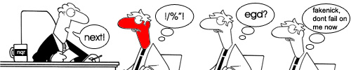

Clanless and clueless, we come to your rescue!

The signups for NQR11 have reached half-time and there’s still a lot of players around that are looking for a clan. Regardless of whether you’re an experienced player looking for a clan or a complete noob to QuakeWorld teamplay: Your situation is not hopeless.
Taking a look at the “Transfers” section of the QuakeWorld.nu Forum, I can see more than just a few people looking for clans and clans looking for people. So if you’re still looking, I suggest the Forum is the place to be right now. If all of those out there that aren’t playing because their clan mates went inactive would join forces, I think we’d see a couple of new clans around in the blink of an eye and hopefully experience a fresh breeze of air going through the QuakeWorld scene. The market sure is quite hot right now with people like Mawe, our beloved Åke Vader, Flintheart, Domin and Samon on it, just to name a few!
There’s also some fantastic news for the rookies out there! PleuraXeraphim has stepped up to manage another “team building initiative” like we saw prior to EQL Season 6. So if you’re a rookie and planning on getting into QuakeWorld teamplay, I suggest you waste no time and head straight over to the thread he started on QuakeWorld.nu!
Links:
Another great pic :)